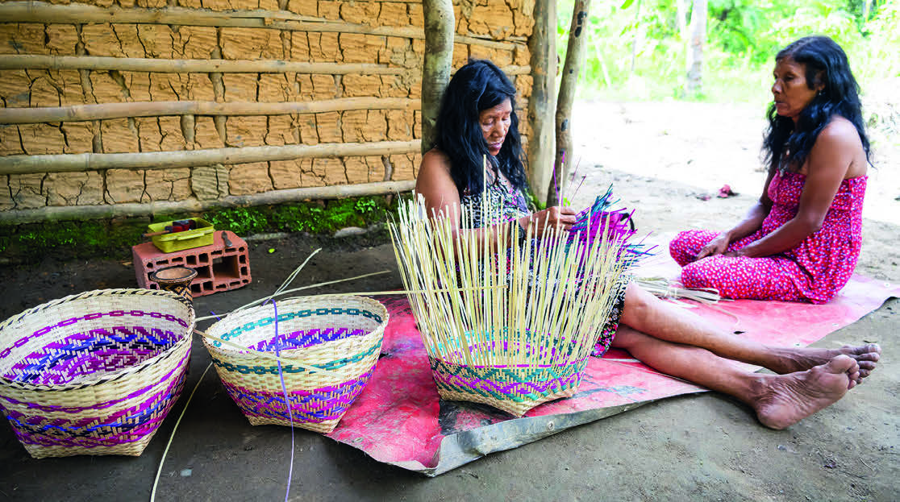
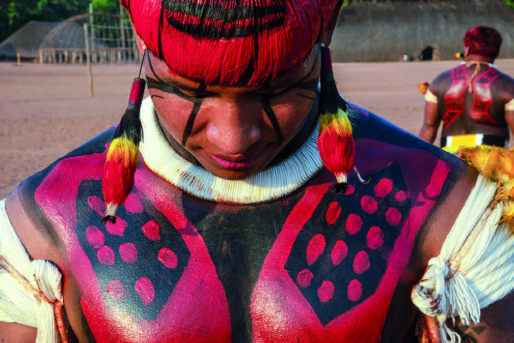

CESTARIA: CONFECÇÃO DE CESTAS PARA ARMAZENAR OBJETOS.
TAMBÉM É UM MEIO PARA CONTAR HISTÓRIAS E AFIRMAR A IDENTIDADE CULTURAL.

MULHERES GUARANI DO NÚCLEO PAYAGUAXU, ALDEIA DO RIO SILVEIRA, TRANÇANDO CESTO DE PALHA DE CASCA DE TAQUARA.
TERRA INDÍGENA RIBEIRÃO SILVEIRA, MUNICÍPIO DE BERTIOGA, SÃO PAULO, FOTOGRAFIA DE 2022.
CADU DE CASTRO/PULSAR IMAGENS
CRÉDITO DE CESTO: PULSAR IMAGENS
PINTURA CORPORAL: FORMA DE ADORNAR O CORPO COM TINTAS EXTRAÍDAS DE ELEMENTOS NATURAIS, COMO O JENIPAPO E O URUCUM.
CADA DESENHO, COR E PADRÃO REPRESENTA VÍNCULOS FAMILIARES, CRENÇAS ESPIRITUAIS E NARRATIVAS HISTÓRICAS.

INDÍGENA DO POVO UAURÁ, ALDEIA PIYULAGA, COM PINTURA CORPORAL.
MUNICÍPIO DE GAÚCHA DO NORTE, MATO GROSSO, FOTOGRAFIA DE 2023.
LUCIOLA ZVARICK/PULSAR IMAGENS
LUCIOLA ZVARICK/PULSAR IMAGENS
PRESERVAÇÃO DA LÍNGUA: A TRANSMISSÃO ORAL DAS LÍNGUAS NATIVAS MANTÉM VIVAS AS TRADIÇÕES LINGUÍSTICAS E TRANSMITE CONHECIMENTOS E VALORES DE CADA POVO INDÍGENA.
PADRÕES GEOMÉTRICOS
UMA DAS CARACTERÍSTICAS DA ARTE DOS POVOS INDÍGENAS SÃO OS PADRÕES, QUE PODEM SER VISTOS EM SUAS CESTARIAS, SEUS ADEREÇOS E NAS PINTURAS CORPORAIS.
OBJETO EDUCACIONAL DIGITAL
Carrossel - Os povos indígenas e os padrões geométricos
Objeto Educacional Digital em formato de carrossel de imagens, no qual são explorados padrões geométricos encontrados na arte indígena de diferentes etnias.
É um objeto digital que apresenta fotografias de pintura corporal, adornos ornamentais feitos em peças de cerâmica, cestaria trançada e aplicada nas construções de cocares de penas e cestaria trançada e aplicada para o uso cotidiano, como o armazenamento de alimentos e utensílios.